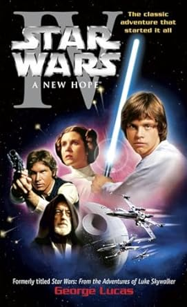
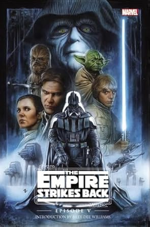
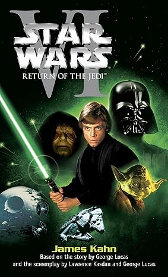
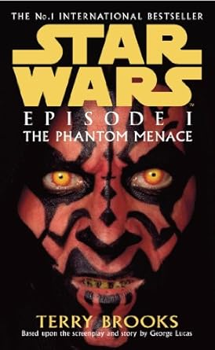

A saga Star Wars é uma épica série de filmes de ficção científica criada por George Lucas. Iniciada em 1977, a franquia se expandiu para se tornar uma das mais icônicas e influentes da história do cinema. A narrativa central gira em torno do conflito entre as forças do bem, representadas pelos Jedi, e as forças do mal, lideradas pelos Sith.
Principais Atores:
Mark Hamill como Luke Skywalker
Harrison Ford como Han Solo
Carrie Fisher como Princesa Leia Organa
5 primeiros Filmes:

Resumo:
O filme segue Luke Skywalker, um jovem fazendeiro que descobre uma mensagem secreta enviada pela Princesa Leia, que foi capturada pelo malévolo Império Galáctico. Com a ajuda do cavaleiro Jedi Obi-Wan Kenobi, do contrabandista Han Solo, e dos droides R2-D2 e C-3PO, Luke embarca em uma missão para resgatar Leia e destruir a Estrela da Morte, uma superarma do Império.

Resumo:
O Império, liderado por Darth Vader, persegue implacavelmente a Aliança Rebelde após a destruição da Estrela da Morte. Enquanto Han Solo, Leia e Chewbacca enfrentam o Império, Luke Skywalker treina com o Mestre Yoda para se tornar um Jedi. O filme culmina em um confronto entre Luke e Darth Vader, onde Luke descobre a verdade chocante sobre sua linhagem.

Resumo:
Na conclusão da trilogia original, Luke Skywalker e seus amigos planejam resgatar Han Solo das garras do criminoso Jabba the Hutt. Eles então se juntam à Aliança Rebelde em uma batalha final contra o Império para destruir uma nova Estrela da Morte. Luke confronta Darth Vader e o Imperador Palpatine em um confronto decisivo que determinará o destino da galáxia.

Resumo:
A saga retorna às suas origens com Qui-Gon Jinn e seu aprendiz Obi-Wan Kenobi tentando proteger a Rainha Amidala de Naboo, que está sob cerco da Federação do Comércio. Eles descobrem Anakin Skywalker, um garoto com um incrível potencial na Força. Enquanto isso, o misterioso Sith Lord, Darth Sidious, começa a executar seu plano para dominar a galáxia.
Resumo:
Dez anos após os eventos de "The Phantom Menace", a galáxia está à beira da guerra civil. Anakin Skywalker agora é aprendiz de Obi-Wan Kenobi e se envolve romanticamente com Padmé Amidala. Enquanto eles investigam uma tentativa de assassinato contra Padmé, descobrem um exército de clones criado em segredo e percebem que a guerra é inevitável. Anakin começa a lutar com seu destino e sua atração pelo lado sombrio da Força.